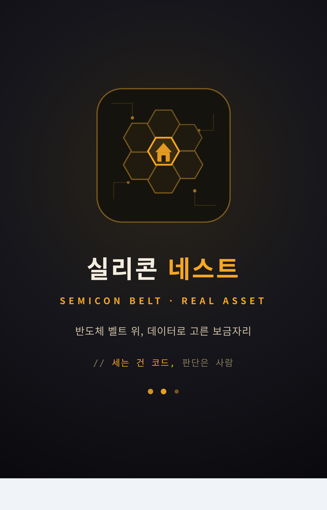
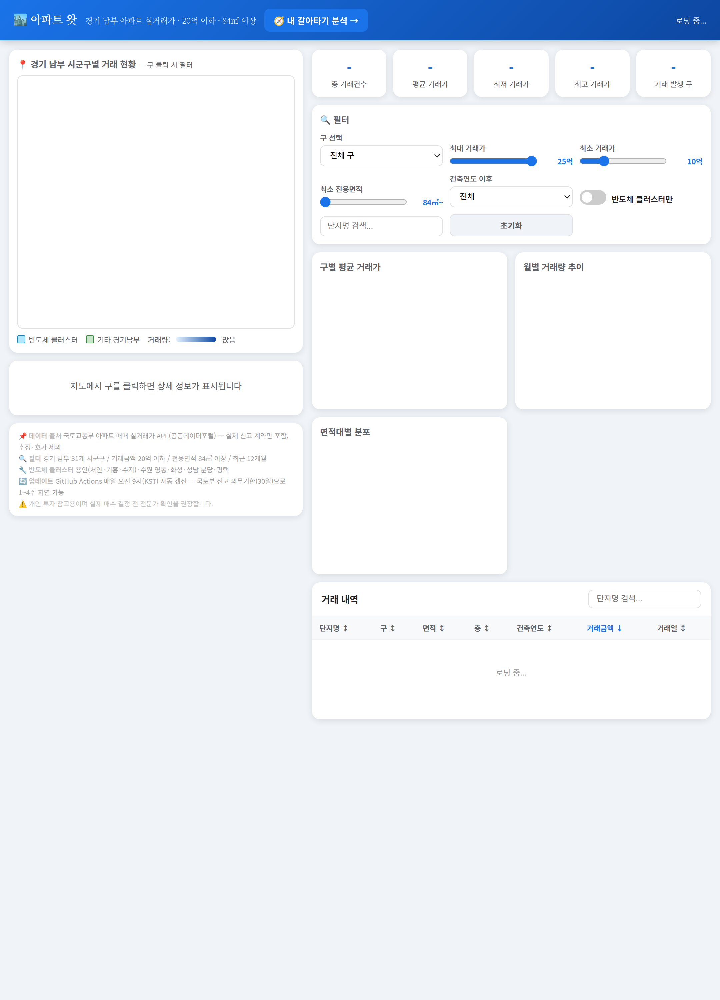
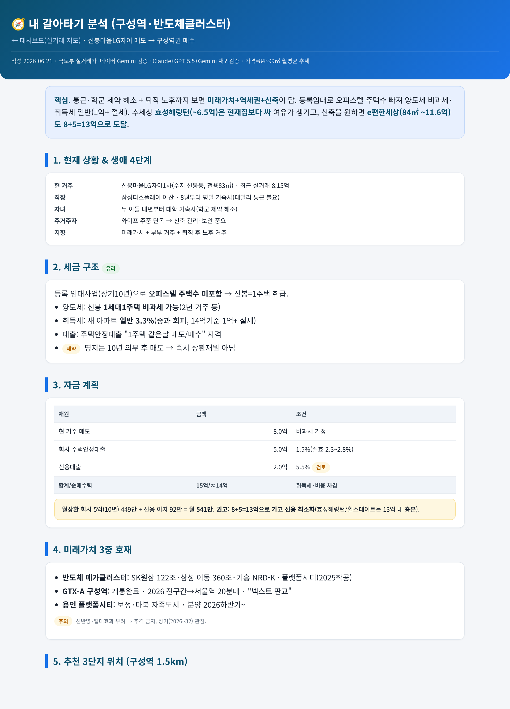
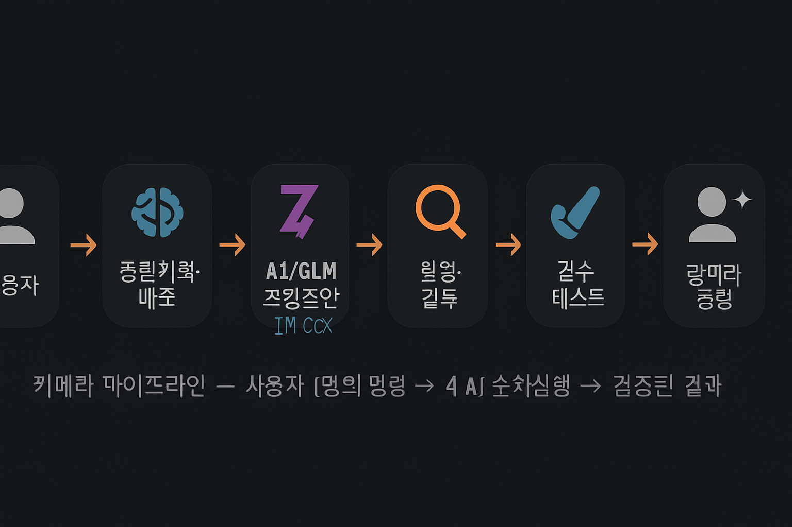

클로드 마스터클래스
이번 3차 세미나는 클로드를 도구가 아니라 시스템으로 쓰는 법을 다룬다. 에이전트·키메라 멀티AI 파이프라인·신뢰 인프라까지 — 일요 AI 모임의 실전 결과물을 그대로 보여준다.
오늘 이 자료 자체도 Claude + GPT + Gemini 재귀검증으로 만들었다. 에이전트가 에이전트를 설명한다.
🆕 클로드 최신 소식 — 2026년 6월 기준
앤트로픽이 조용히, 그러나 빠르게 움직이고 있다. 핵심 업데이트만 정리.
Claude Sonnet 4.6 & Opus 4.8 — 현재 라인업
Sonnet 4.6은 코딩·분석 최적화, Opus 4.8은 복잡한 추론 최고 성능. 이 세미나 자료를 만든 모델이 Sonnet 4.6이다. Fast 모드(Opus급 속도)도 추가됨.
Claude Code — 터미널 에이전트의 완성
단순 코딩 도우미에서 폴더 전체를 맡아 git·배포·자동화까지 처리하는 에이전트로 진화. cokacdir 텔레그램 비서의 엔진이 바로 이것. /schedule·/skill 등 슬래시 커맨드로 세션 외 자동화 가능.
MCP (Model Context Protocol) — 업계 표준 등극
앤트로픽이 발표한 AI ↔ 외부서비스 연결 규약. 이제 OpenAI·Google·MS도 채택. 카카오·네이버·부동산 API·GitHub 전부 커넥터 하나로. AI의 USB-C타입 충전기.
멀티에이전트 오케스트레이션 — Claude가 Claude를 지휘
하나의 Claude가 여러 서브에이전트를 실행·조율하는 공식 패턴 지원. 복잡한 작업을 병렬로 분해·실행·합산. 오늘 s06b 키메라 파이프라인의 공식 기반 기술.
Extended Thinking
Opus 4.8에서 강화. 복잡한 수학·추론 문제를 "생각하는 시간" 부여 후 답변. 사고 과정이 보임.
Computer Use (베타)
클로드가 직접 마우스·키보드 조작. 웹 자동화·앱 테스트. 아직 베타지만 실용 수준 근접.
128K→200K 컨텍스트
책 한 권 통째로 입력. 장문서·코드베이스 전체 분석 가능. Z AI GLM은 1M 토큰.
Projects & Memory
claude.ai에서 프로젝트별 기억 유지. "매번 다시 설명"에서 해방. 팀 공유도 가능.
01 시리즈에서의 위치
채팅 → 바이브코딩 → 에이전트. 이번 3차는 "클로드를 도구가 아니라 시스템으로 쓰는 법".
1차
AI 기초·사내 GPT/Codex 실전 — "그냥 써보기"
2차
바이브코딩·연구 검증·시뮬레이터 — "만들어 쓰기"
3차 (오늘)
클로드 에이전트·키메라·신뢰 인프라 — "시스템으로 굴리기"
02 클로드의 3가지 얼굴
같은 클로드, 다른 인터페이스. 용도가 다르다.
① Chat
질문·요약·문서·기획. 가장 가벼움. "물어보고 답 받기".
② Cowork
데스크탑 앱 + MCP 커넥터 활용. 부동산 시세·지도·카카오 끌어다 쓰기. 마우스로 다룸. 단, 배포는 터미널서 직접.
③ Code (CLI)
터미널 기반. git 연동·배포·크론 자동화. 폴더를 통째로 맡김. cokacdir(텔레그램 비서)의 엔진.

03 MCP — 모든 도구를 꽂는 C타입
Model Context Protocol. AI가 외부 앱·웹·데이터와 소통하는 표준 규약(앤트로픽 발표 → 업계 표준).
04 실전 케이스 ① — 일요모임 "부동산 앱"
한 멤버가 Cowork + MCP로 만든 서울 아파트 실거래 지도 대시보드.
- 데이터: 공공데이터포털 실거래가 API + 네이버부동산/크롬 MCP + 지도 API
- GitHub Actions로 매일 09시 자동 갱신 (서버용 맥미니)
- 핵심 통찰: 가중치 점수화(학교·주차·역거리…) = ETF 모멘텀 로직의 부동산 이식
05 실전 케이스 ② — 에이전트가 만든 전 과정 (오늘, 실제)
"채팅 몇 줄"로 에이전트가 앱 하나를 처음부터 끝까지 만든 실제 기록. 실리콘 네스트(경기남부 아파트).
📸 에이전트가 만든 실제 화면



위 3개는 "채팅 대화"만으로 에이전트가 생성·배포한 실제 결과물 화면이다. (waterfirst.github.io/gyeonggi_south_apt)
06 키메라 — 혼자보다 같이가 강하다
AI마다 강점이 다르다. 역할을 맞춰야 1+1이 3이 된다. v2.2는 경쟁형·협업형을 Claude가 작업 특성에 따라 선택한다.
Claude
아키텍처·복잡추론
TASK SPEC·모드 선택
통합·배포
Z AI
속도·백엔드
반복구조·1M 컨텍스트
코딩 초안 최속
GPT
UX 완성도·창의성
문서·레드팀
세컨드 오피니언
Gemini
대용량 컨텍스트
멀티파일 평가·리서치
객관 심판
★ 재귀 교차검증 (오늘 실제로 작동)
- GPT-5.5가 클로드의 "예수금 소진·반도체 둔화" 오판을 잡아냄
- 동시에 GPT의 "코스피 9,200 비현실적" 오판을 Gemini 실측(9,052)으로 클로드가 역기각
- 결론: 레드팀도 무오류가 아니다 → 최종 판정은 사람 + 실측
06+ 키메라 파이프라인 v2.2 이중 운영 체계
Claude가 작업을 분석해 경쟁형 / 협업형을 선택한다. 사람 명령 1줄 → 최대 4개 AI → 검증된 결과물.
- 단일 기능·코드 품질 경쟁이 효율적인 경우
- 선제출 AI를 Gemini가 즉시 평가 → 루프 최대 2회
- 동점 시 GPT 우선
- 대형·복합 태스크, 역할 분담이 효율적인 경우
- Z AI→속도/백엔드, GPT→UX/창의성/문서
- Claude 통합 → Gemini 통합본 평가 → Claude 수정
⚔️ 경쟁형 파이프라인
경쟁형 선택
평가 /100
배포
🤝 협업형 파이프라인
역할 분배
평가 /100

AI 강점 프로파일 · 역할 고정표
아키텍처·통합·오케스트레이션
TASK SPEC 작성, 모드 선택, 통합·수정, 배포 단독 권한. 토큰 최소화+완성도 병행.
속도·백엔드·반복구조
1M 컨텍스트, 코드 초안 최속. 반복 구조·데이터 처리 특화. SKILL.md 지시 따름.
UX 완성도·창의성·문서
UI 다듬기, 창의적 문안, 레드팀 반박. 독립 세컨드 오피니언, 교차검증.
대용량·멀티파일·객관 심판
대용량 컨텍스트로 전체 코드 일괄 리뷰. 실측 검색·버그 리포트. 경쟁형·협업형 모두 심판.
의사결정자
최종 실행 승인. AI는 제안, 사람이 집행.
Claude 평가표 /100
MD 핸드오프 시스템
각 AI는 마크다운 파일로 소통한다. 채팅이 아니라 문서로 인수인계.
운영 규칙 12가지
07 에이전트를 신뢰가능하게 — 4대 인프라
AI를 "그냥" 쓰지 말 것. 시스템으로 묶어야 신뢰가 생긴다.
① 스킬(Skills)
반복 작업을 절차로 박제. "이런 요청엔 이렇게" 자동 적용.
② 헌법(Constitution)
최상위 운영 규칙. 메모리·키·교차검증·"세는 건 코드". 모든 세션이 따름.
③ 키 관리
5중 방어. 하드코딩 금지·secrets 중앙화·pre-commit 차단·주간 감사.
④ 크론(자동화)
모델 등급제(haiku/sonnet/opus)로 비용 최적화. 무신호=무응답.
# 절대 금지: 코드에 평문 키 API_KEY = "sk-xxxxxxxx..." # ❌ pre-commit hook이 차단 # 올바른 방법: 환경변수 / GitHub Actions secrets API_KEY = os.environ["API_KEY"] # ✅ gh secret set MOLIT_API_KEY -R repo # ✅ 암호화 저장오늘도 포크한 레포의 노출 키를 전부 제거하고 secrets로 옮겼다. private 여부 확인 → 마스킹 → 토큰 일회성 → 클론 삭제.
09 RTK — 토큰 킬러 시스템
Claude Code의 Bash 도구 호출마다 발생하는 불필요한 토큰을 자동으로 제거하는 Rust 단일 바이너리 훅.
RTK가 하는 일
설치: settings.json 훅 등록
{
"hooks": {
"PreToolUse": [{
"matcher": "Bash",
"hooks": [{ "type": "command", "command": "rtk hook pre" }]
}],
"PostToolUse": [{
"matcher": "Bash",
"hooks": [{ "type": "command", "command": "rtk hook post" }]
}]
}
}
경로: ~/.claude/settings.json — 한 번 설정하면 모든 세션에 자동 적용
RTK 메타 명령
rtk gain — 현재까지 절약된 토큰 수·비율 즉시 조회rtk gain --history — 명령별 절감 이력 (어떤 명령이 가장 많이 절약했나)rtk discover — Claude Code 히스토리 분석 → 아직 RTK가 잡지 못한 기회 식별rtk proxy <cmd> — 필터링 없이 원본 명령 실행 (디버깅용)rtk --version — 설치 확인⚠️ 주의 — rtk gain이 실패하면 reachingforthejack/rtk(Rust Type Kit)가 이미 설치된 것. 올바른 바이너리: Rust Token Killer. which rtk로 경로 확인 후 재설치.
"토큰을 아끼는 것이 곧 AI 에이전트 운영 비용을 줄이는 것이다. RTK는 설정 한 번으로 매 세션마다 자동으로 일한다."
08 결론 — 한 문장
"AI를 그냥 쓰지 말고, 헌법·교차검증·키관리로 묶어 시스템으로 굴려라."
최고의 모델(클로드)을 중심에 두되, GPT·제미나이로 교차검증하고, 스킬·헌법·키관리로 신뢰를 만든다. 그러면 "채팅 한 줄"이 검증된 결과물로 바뀐다.